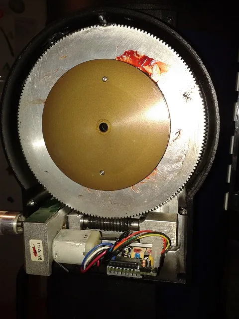
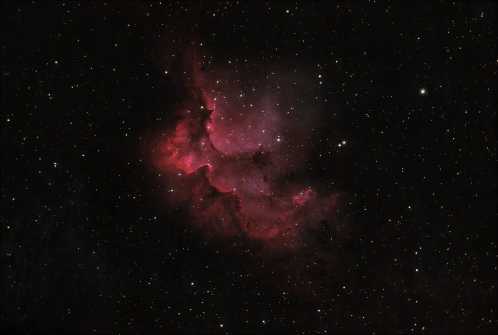

Origin Story
In 2024, I inherited an old Meade LX200 telescope. This is one of the oldest computerized telescopes on the market. Built like a tank, capable of precise movements to point to anything in the sky, and even able to compensate for Earth's rotation to allow for long-exposure astrophotography (sidereal tracking), it was the best one could get in the 1990s. Unfortunately, this unit's electronics had been dead for decades.
As an astronomy enthusiast, I was interested in astrophotography, but the cost had always been prohibitive for me. I knew if I could replace this telescope's electronics, it could be my gateway into astrophotography!
Observations
After a lot of troubleshooting that led me to understand the electronics couldn't be repaired and had to be replaced, I assessed what I knew about the telescope mount and reverse engineered as much of it as I could to have a rough idea of what challenges I would need to solve. Here are some of the observations I made:
- All electronic components in the telescope are very big, and connector sizes match what is used nowadays in hobbyist hardware (jumper wires, Raspberry Pi style headers...)
- The motherboard was beyond saving, but all the mechanical parts were in perfect condition, including the motors and gears.
- Both axes' drives are identical and rely on a simple DC motor with closed-loop feedback. The DC motor drives a gearbox with a 10800:1 reduction ratio. A 90-slot quadrature rotary encoder is attached to each motor shaft. That means each encoder generates 10800 pulses per degree of rotation.
- The encoder reading and feedback loop were managed by the motherboard. That meant I had to design a feedback loop, and a system able to read the 172800 pulses/second from the encoders to achieve the original 8°/s speed.


Project outline
From this, I was able to sketch what the project would look like:
- The motherboard is replaced by a microcontroller
- A Python program on my laptop sends commands to the microcontroller
- This Python program looks up the position of the celestial object I want in a database, corrects for the current time and location, and sends the appropriate command
- The microcontroller is constantly listening for pulses from the encoders, so that it knows very precisely the position of both axes at any time
- When it receives a command, the microcontroller sends the appropriate voltage to the motors according to a digital PID feedback loop.
Feedback Loop
I quickly identified that the main challenge would be to be able to detect 172800 pulses per second to keep track of the axes' position, without missing a single one, while performing all other firmware-related tasks. After a few tests, I realized an Arduino, which I was familiar with, was just not reliable enough to do this. Even though an Arduino's clock speed is theoretically fast enough, some pulses were always missed even when using hardware interrupts, which caused drift over time.
To tackle this challenge, I chose a device that had just been released at the time: the RP2040 microcontroller. The reason is that it has 8 "PIO (Programmable Input/Output)" state machines, that essentially behave as small secondary microcontrollers dealing with simple input/output related computations. This was perfect for my rotary encoders: the PIO can keep track of the encoder positions, while being blazing fast with no interference from the main loop code.
The main code then deals with the feedback loop, computing the PID control voltage to send to the motors.
It can run in two different modes: either targeting a fixed position, or targeting a fixed speed (useful specifically for sidereal tracking).
Driving the motors
After frying an L293D DC motor H-bridge, I switched to a more robust L298N. It had the added benefit that it came on a circuit board which included a heatsink and a 5V output I could use to power the microcontroller.
The RP2040 can only generate 3.3V, while the L298N expects 5V. I had to use level shifters to achieve reliable operation.
The L298N only supports digital input and output. To have precise control over the voltage the motors receive, the solution I chose was to send PWM signal. By lowering the duty cycle, the average voltage drops, which allows control. Fortunately, the RP2040 supports hardware-based PWM.
At first, I also tried adding an electronic low-pass filter after the H-bridge, but it ended up being unnecessary, as the motor itself acts as a low-pass filter.
Computer control
Using the Astropy library, I easily made a Python script that could search for a celestial object in a database, get its coordinates, and compute the axes positions needed to point at it.
To send commands, I connect the microcontroller via USB and use the pyserial library for serial communication, with a very simple protocol inspired by the original LX200 protocol. Managing the serial communication is one more thing the microcontroller main loop has to do, which is one more reason to use PIO.
Autoguiding
This feature is still experimental but gives promising results.
All astrophotography mounts, even the best ones, have some periodic error or polar alignment error that causes drift over time. This drift is typically slow enough to not be noticeable on a single picture, but deep-sky astrophotography typically requires many exposures of the same object over the course of the night. In that case, the misalignment is a big problem. The best solution is generally to add a secondary camera that measures the displacement of the stars in the field of view. The computer can then send corrections to the mount.
Since my system does not use a standard firmware, it is not compatible with any traditional astronomy software. However, PHD Guiding was compatible with my camera, and I could use the ST-4 autoguiding protocol to send correction commands to the microcontroller through the camera. The microcontroller then interprets these commands to drive the motors accordingly.
Results
I am now able to reliably point my telescope to any object in the sky in seconds, and take very long exposure pictures, sometimes for the whole night or even multiple nights in a row!
This project marked the beginning of my astrophotography journey, which continues to this day. I use every opportunity I get to go outside at night and take pictures of the sky, and I feel like my skills are really improving over time.


The only inconvenience left is the size and setup time of the telescope. This led me to start my next project: a tiny, cheap, astrophotography star tracker!